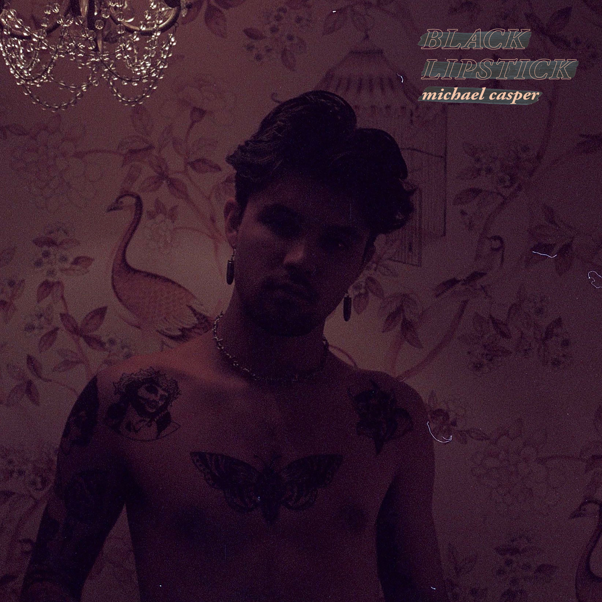
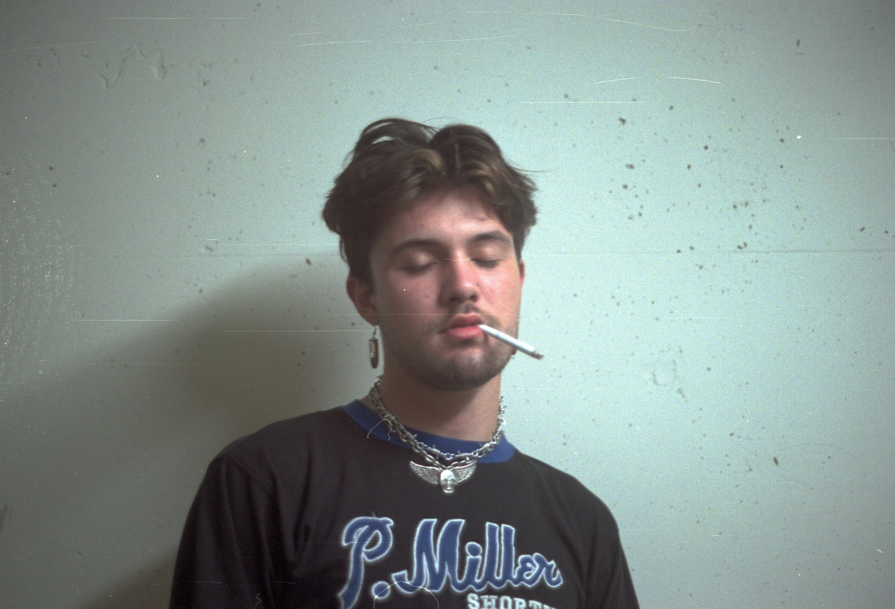
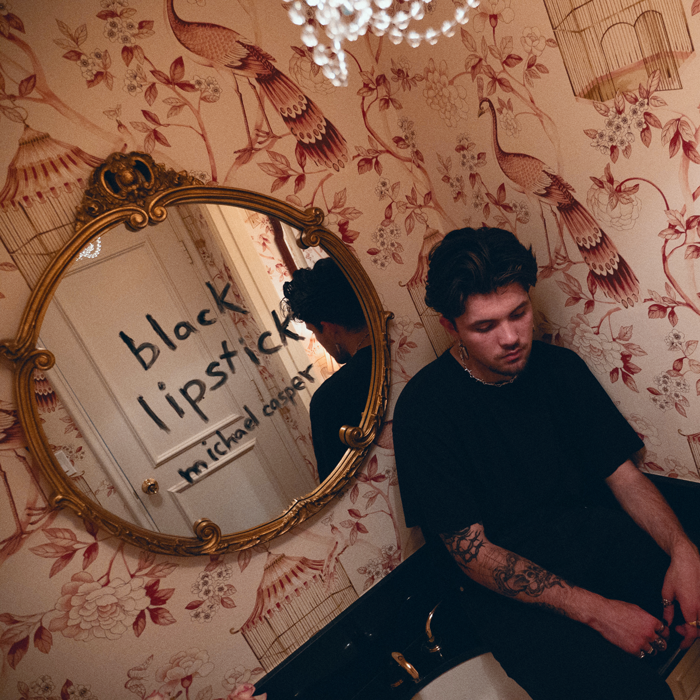
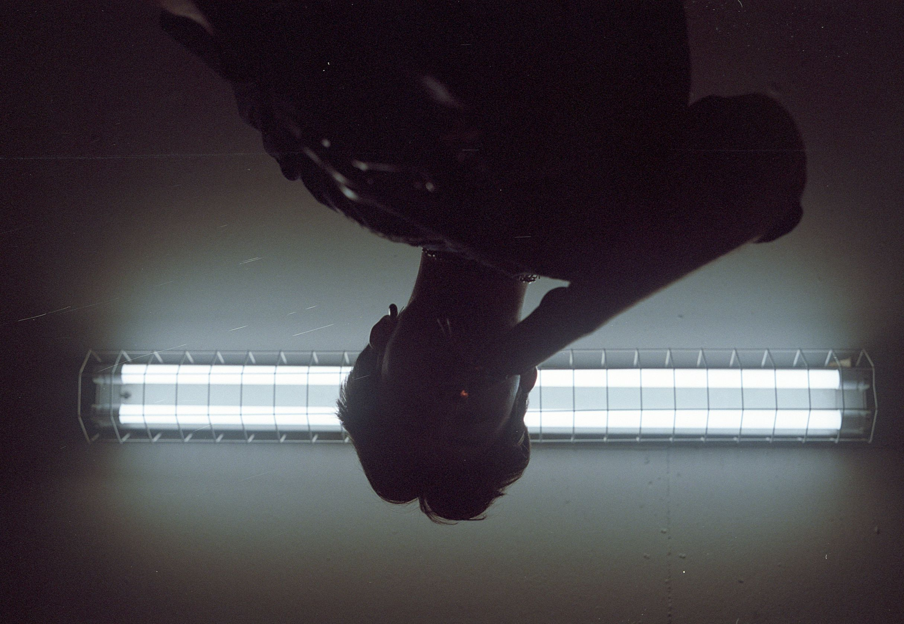

"black lipstick"
by
MICHAEL CASPER
release date of october 31st, 2018

"black lipstick": "what do you do when the person of your dreams turns out to be real?"
a story of meeting someone for the first time and instantly knowing that they’re the one.

after this brief introduction you’re convinced that there’s no one else for you.
you’ve felt this way before but you try telling yourself it’s different this time.

you’re left with a feeling of dissatisfaction from not knowing what this will become.
you’ll do anything to be with them."
-michael casper
october 4th, 2018